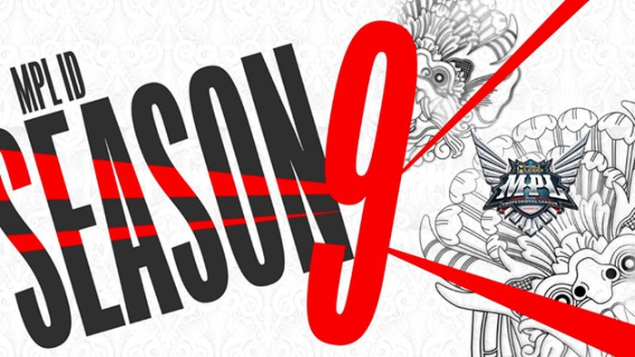

|
Bagi para pecinta game mobile legends di Indonesia harap bersiap karena sebentar lagi turnamen Mobile Legends Professional League Indonesia Season 9 akan segera dimulai.MPL ID S9 dijadwalkan akan memulai pada 18 Februari 2022. Turnamen paling bergengsi dunia mobile legends Indonesia akan diselenggarakan secara offline dengan penonton yang terbatas. |
Sementara itu Tahun lalu, ONIC Esports yang berasil menjuarai MPLS9 dan RRQ yang berhasil memecahkan rekor final yang diadakan secara offline di Bali, yang kemudian bermain di Kejuaraan Dunia M3.Namun pada akhirnya keduanya harus pulang terlebih dahulu dan kini mereka kembali untuk bertarung dengan tim lainnya di MPL ID S9. dari setiap tim berusaha dengan semaksimal mungkin dan akan membuktikannya Di MPLS9 nanti dengan performa yang Terbaik dari sebelumnya. |
|
Beberapa wilayah di Indonesia yang mengkin memiliki bioskop kabarnya juga akan di tayangkan disana. setelah beberapa perbincanagn serta keputusan di tim penyelenggara karna adanya kasus Covid yang naik mungkin dengan diadaknnya MPLS9 di bioskop ini dapat mongobati rasa rindu fans yang ingin melihat pertanddingan secara ofline, dan jika kasus menurun mungkin akan di coba secara ofline tetapi tetap dengan adanya pemeriksaaan yang ketat dan beberapa tes dan protokol kesehatan. |
Dengan adanya Roster tebaru dan beberapa transfer sebelum pertandinagn, masing masing tim seudah menyiapkan masinh masing strategi terbaru dan akan menjadi kejutan di MPLS9 Nanti nya Berikut adalah tanggal pengumuman resmi untuk seluruh roster yang akan berlaga di . MPL ID S9) |